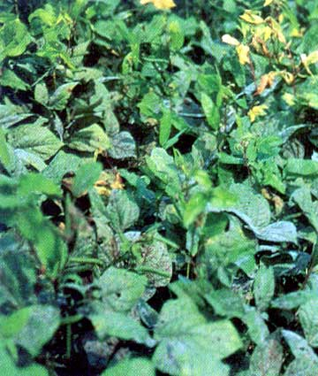

| Home |
| Black gram |
MAJOR DISEASES |
| 1. Powdery mildew |
| 2. Anthracnose |
| 3. Leaf spot |
| 4. Rust |
| 5. Dry root rot |
| 6. Yellow mosaic disease |
| 8. Leaf curl / Necrosis |
MINOR DISEASES |
| 1. Ascochyta leaf spot |
| 2. Bacterial blight |
| Questions |
| Download Notes |
BLACKGRAM :: INDEX :: DISEASES OF BLACKGRAM
